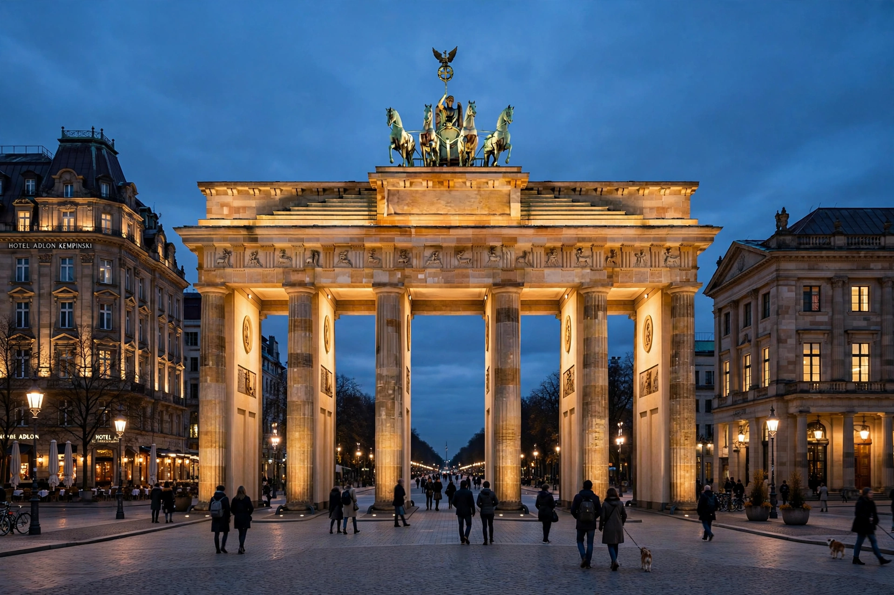

Berlin
| Berlin | |
|---|---|
 | |
| Country | Germany |
| Status | Capital city and federal state |
| Area | 891.8 km² |
| Population | ~3.7 million (city); ~6 million (metro) |
| Divisions | 12 boroughs (Bezirke) |
Berlin is the capital and largest city of Germany, both by area and by population. It is one of Germany's sixteen federal states (Länder) and is entirely surrounded by the state of Brandenburg. Berlin straddles the rivers Spree and Havel in the northeast of the country, about 60 kilometres west of the Polish border.
History
Berlin grew from twin trading towns, Berlin and Cölln, founded in the early 13th century on opposite banks of the Spree. It became the residence of the Margraves of Brandenburg and later of the Hohenzollern kings of Prussia. Under Frederick the Great in the 18th century it developed into a centre of the Enlightenment. Berlin became the capital of the German Empire in 1871 and grew rapidly into one of Europe's great industrial and cultural metropolises.
The city was heavily bombed in the Second World War and in 1945 was divided into four occupation sectors. The western sectors formed West Berlin, an exclave of West Germany entirely surrounded by East Germany, while East Berlin became the capital of the German Democratic Republic. From 1961 the Berlin Wall sealed the division. The Wall fell on 9 November 1989, and Berlin was reunified as the capital of a reunified Germany in 1990; the federal government moved from Bonn in 1999.
Sights and culture
Landmarks include the Brandenburg Gate, the Reichstag building, the East Side Gallery, Checkpoint Charlie, and the Holocaust Memorial. Museum Island in the Spree, with five major museums including the Pergamon Museum, is a UNESCO World Heritage Site. Berlin is renowned for its nightlife, electronic music scene, and festivals such as the Berlinale film festival, whose top prize is the Golden Bear.
Economy and transport
Berlin's economy is dominated by services: government, creative industries, media, tourism, and a major start-up sector, alongside research at its universities — Humboldt University, the Free University, and the Technical University among them. The city is a rail hub centred on Berlin Hauptbahnhof, and since 2020 its international airport is Berlin Brandenburg Airport (BER).